Programming in Quantum with Qiskit
Qiskit is a Python framework che permette di simulare la quantum computation, si compone di quattro elementi.
Il primo Terra è la base le fondamenta del quantum computing e permette la compilazione dei circuiti e l 'interazione con i backend.
Poi abbiamo Aqua per la chimica, ottimizzazioni e per l'intelligenza artificiale mentre Aer è un simulatore ad alta performance.
Infine Ignis per la gestione delle interferenze e degli errori.
Con il quantum computing si ottengono dei risultati molto più veloci nella soluzione degli algoritmi matematici rispetto al tradizionale
computing.
Ad esempio ad oggi ci sono degli algoritmi che con il quantum computing vengono risolti molto velocemente ad esempio il Deutsch-Jozsa algorithm,
Simon algorithm ed il Bernstein-Vazirani algorithm. Quest'ultimo verrà poi analizzato in modo dettagliato.
In questo post si parla della programmazione in Python del QUANTUM partendo dalla simulazione
di un quantum in Colab Notebooks, naturalmente è possibile installare le sottostanti librerie in un proprio
ambiente virtuale ad esempio tramite Anaconda/Conda o tramite lo stesso Python. IBM permette di effettuare prove sul suo IBM Q
quantum computers.
Esempi di creazione di un circuito quantico e sua visualizzazione
!pip install qiskit
from qiskit import *
%config InlineBackend.figure_format = 'svg' # Config for images look nice
qc = QuantumCircuit() #creo il circuito quantico
qr = QuantumRegister(2,'qreg') #creo il registro quantico con 2 qubit
qc.add_register( qr ) #add il registro creato al cicuito definito vuoto
qc.qregs
qc.draw(output='mpl') #disegno il circuito - immagine sottostante
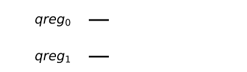
qc.h( qr[0] ) #corretto abbiamo 2 qubit 0 ed 1
qc.cx( qr[0], qr[1] );
qc.draw(output='mpl')
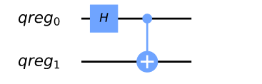
vector_sim = Aer.get_backend('statevector_simulator')
job = execute( qc, vector_sim )
il resultato dell'esecuzione è job con cui ottengo lo stato del vector
stato = job.result().get_statevector()
for i,sta in enumerate(stato):
print(i, sta)
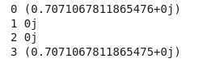
Il j in python equivale al simbolo dei numeri complessi.
This is the vector for a Bell state (∣∣00⟩+∣∣11⟩)/2‾√, which is what we'd expect given the circuit.
Ora altro esempio inizializzo circuito con altri parametri
metodo measure con input qubit e differenti bit dove mettere output. Per misurare si usa ClassicalRegister
new_qc = QuantumCircuit( qr )
new_qc.initialize( ket, qr )
cr = ClassicalRegister(2,'creg')
qc.add_register(cr)
qc.measure(qr[0],cr[0])
qc.measure(qr[1],cr[1])
qc.draw(output='mpl')
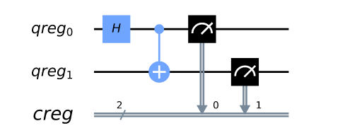
Ora simuliamo un reale quantum device. Shots = numero di esecuzioni del circuito se non si inserisce un valore prende di default 1024
emulator = Aer.get_backend('qasm_simulator')
job = execute( qc, emulator, shots=1024 )
ris = job.result().get_counts()
print(ris)
Risultato : {'11': 514, '00': 510}
Risultato in Istogramma
from qiskit.visualization import plot_histogram
plot_histogram( ris )
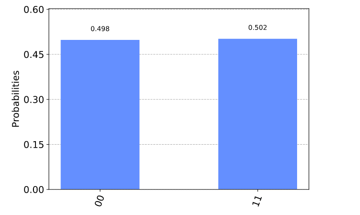
Lista dei risultati
job = execute( qc, emulator, shots=15, memory=True )
lista = job.result().get_memory()
print(lista)
['11', '11', '11', '11', '11', '11', '11', '11', '00', '11', '11', '00', '00', '11', '11']
I risultati dellla lista vanno da dx a sx.
Sotto altro esempio con 8 qubit in cui si vede che 1 è a sx come per sistema binario 2 elevato alla 7 uguale a 10000000
qubit = QuantumRegister(10)
bit = ClassicalRegister(10)
circuit = QuantumCircuit(qubit,bit)
circuit.x(qubit[9])
circuit.measure(qubit,bit) # this is a way to do all the qc.measure(qr8[j],cr8[j]) at once
execute( circuit, emulator, shots=2000 ).result().get_counts()
{'1000000000': 2000}
Input 3 = number of Qubit senza classical circuit
qc = QuantumCircuit(3)
qc.h(1) #add a gate in questo caso 0, 1 o 2
qc.draw(output='mpl')
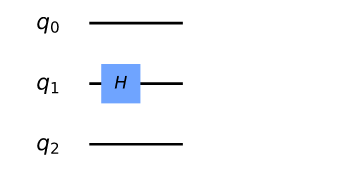
qc.h(2) #add a gate in questo caso 0, 1 o 2
qc.draw(output='mpl')
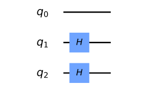
Per definire un circuito con quantun e classical register si può inserire 2 parmetri, il primo è il numero qubits ed il secondo il numero dei bits. Nell' esempio sottostante inseriamo 3 qubits e 2 bit di output
qc = QuantumCircuit(3,2)
qc.h(2)
qc.cx(0,1)
qc.measure(1,0)
qc.draw(output='mpl')
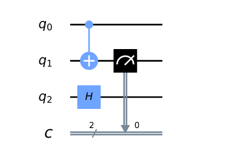
Ora vediamo una rappresentazione grafica dei Qubit
Matrices and the Bloch Sphere
from qiskit import *
from qiskit.visualization import plot_bloch_vector
%config InlineBackend.figure_format = 'svg'
qc = QuantumCircuit(1)
# z measurement of qubit 0
z = QuantumCircuit(1,1)
z.measure(0,0);
# x measurement of qubit 0
x = QuantumCircuit(1,1)
x.h(0)
x.measure(0,0)
# y measurement of qubit 0
y = QuantumCircuit(1,1)
y.sdg(0)
y.h(0)
y.measure(0,0);
shots = 2**14 # number of samples used for statistics
bloch_vector = []
for circuito in [x, y, z]:
# eseguo circuito misurando stato
counts = execute(qc+circuito,Aer.get_backend('qasm_simulator'),shots=shots).result().get_counts()
# calculo la probabilità per ogni bit
probs = {}
for output in ['0','1']:
if output in counts:
probs[output] = counts[output]/shots
else:
probs[output] = 0
bloch_vector.append( probs['0'] - probs['1'] )
plot_bloch_vector( bloch_vector )
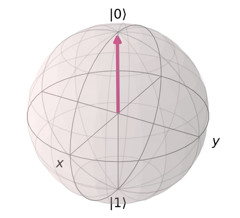
Creare custom gates
Si possono creare circuiti più complessi anche creando custom gates.
Sotto un circuito cx tra qubits 0 e 2 con qubit 1 che esercita una mediazione tra gli altri 2.
sc = QuantumCircuit(3, name='custom_cx')
sc.cx(0,1)
sc.cx(1,2)
sc.cx(0,1)
sc.cx(1,2)
sc.cx(0,1)
sc.cx(1,2)
sc.draw(output='mpl')
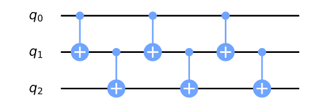
custom_cx = sc.to_instruction()
qr = QuantumRegister(4)
nqc = QuantumCircuit(qr)
nqc.append(custom_cx, [qr[1],qr[2],qr[3]])
nqc.draw(output='mpl')
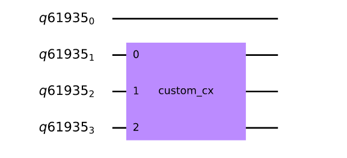
from qiskit import QuantumCircuit, execute, Aer
from qiskit.visualization import plot_histogram
%config InlineBackend.figure_format = 'svg'
n = 8
qc1 = QuantumCircuit(n)
qc1.x(7)
qc1.draw(output='mpl')
n1 = 8
n2 = 8
qc2 = QuantumCircuit(n1,n2)
counts = execute(qc2,Aer.get_backend('qasm_simulator')).result().get_counts()
plot_histogram(counts)
Risultato 0000000
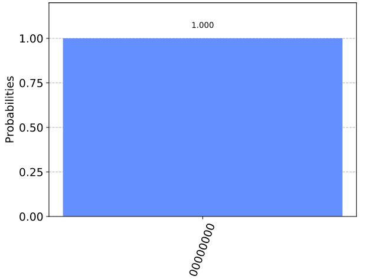
Sommando i 2 circuiti il risultato è 10000000 perchè inserito X il NOT che inverte l'output
for j in range(n):
qc2.measure(j,j)
qc = qc1 + qc2
qc.draw(output='mpl',justify='none')
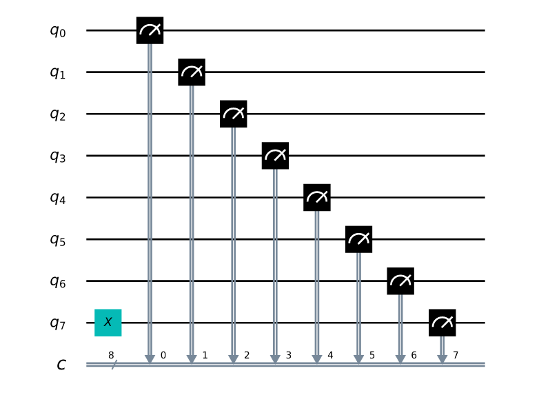
counts = execute(qc,Aer.get_backend('qasm_simulator')).result().get_counts()
plot_histogram(counts)
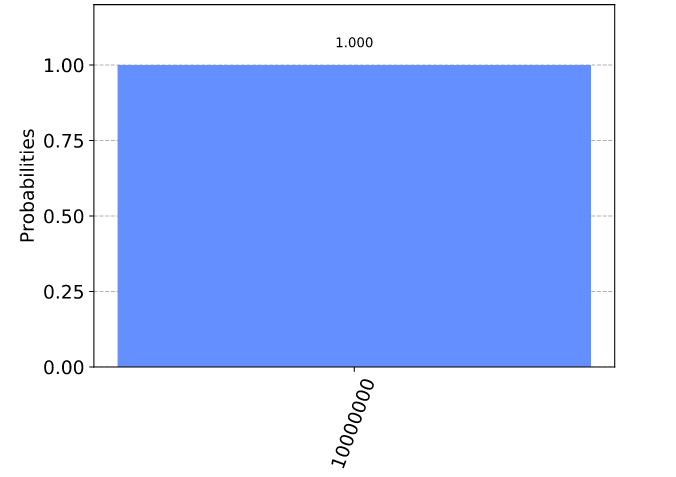
#try CNOT
qc = QuantumCircuit(2,2)
qc.x(0)
qc.cx(0,1)
qc.measure(0,0)
qc.measure(1,1)
qc.draw(output='mpl')
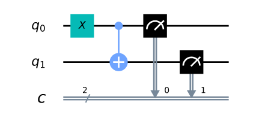
qc = QuantumCircuit(2,2)
qc.cx(0,1)
qc.measure(0,0)
qc.measure(1,1)
qc.draw(output='mpl')
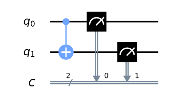
counts = execute(qc,Aer.get_backend('qasm_simulator')).result().get_counts()
plot_histogram(counts)
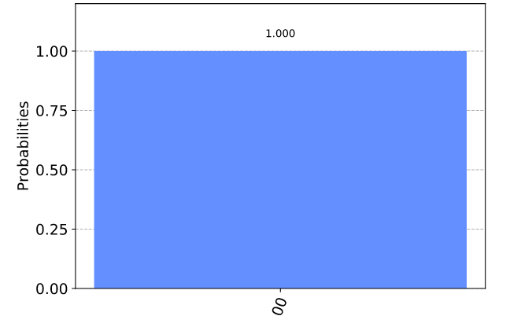
#test cnor
# 0 e 0 -- 1 e 1 = 1
# 0 e 1 -- 1 e 0 = 1
qc_ha = QuantumCircuit(4,2)
# encode inputs in qubits 0 and 1
qc_ha.x(0) # For a=0, remove this line. For a=1, leave it.
qc_ha.x(1) # For b=0, remove this line. For b=1, leave it.
qc_ha.barrier()
# use cnots to write the XOR of the inputs on qubit 2
qc_ha.cx(0,2)
c_ha.cx(1,2)
qc_ha.barrier()
# extract outputs
qc_ha.measure(2,0) # extract XOR value
qc_ha.measure(3,1)
qc_ha.draw(output='mpl')

For this we need a new gate: like a CNOT, but controlled on two qubits instead of just one. This will perform a NOT on the target qubit only when both controls are in state 1.
This new gate is called the Toffoli. For those of you who are familiar with Boolean logic gates, it is basically an AND gate.
qc_ha = QuantumCircuit(4,2)
# encode inputs in qubits 0 and 1
qc_ha.x(0) # For a=0, remove the this line. For a=1, leave it.
qc_ha.x(1) # For b=0, remove the this line. For b=1, leave it.
qc_ha.barrier()
# use cnots to write the XOR of the inputs on qubit 2
qc_ha.cx(0,2)
qc_ha.cx(1,3)
# use ccx to write the AND of the inputs on qubit 3
qc_ha.ccx(0,1,3)
qc_ha.barrier()
# extract outputs
qc_ha.measure(2,0) # extract XOR value
qc_ha.measure(3,1) # extract AND value
qc_ha.draw(output='mpl')
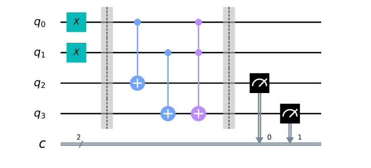
Risolvo il quesito 1+1 = 2
counts = execute(qc_ha,Aer.get_backend('qasm_simulator')).result().get_counts()
plot_histogram(counts)
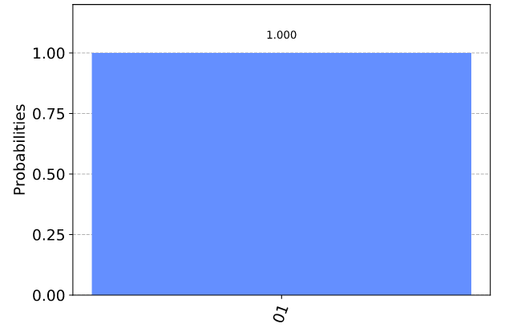
NOISY ON QUANTUM CIRCUIT ON QUANTUM COMPUTERS
Negli esempi sottostanti si costruisce un circuito di 3 qubits e lo si esegue su di un
Computer Quantico messo a disposizione dalla IBM.
Come si evince dal grafico sottostante si hanno degli errori o noisy che generano dei risultati
imprecisi con più valori di quelli che ci si aspetterebbe.
Per ovviare a questi effetti si sono create delle utility per mitigare questi effetti come vedremo in seguito.
from qiskit import *
from qiskit.tools.visualization import plot_histogram
%matplotlib inline
nq = 3
circuit = QuantumCircuit(nq,nq)
circuit.h(0)
circuit.cx(0,1)
circuit.cx(1,2)
circuit.measure(range(nq),range(nq))
circuit.draw(output='mpl')
circuito di 3 qubit
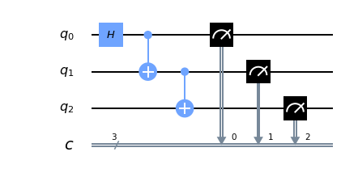
simulator = Aer.get_backend('qasm_simulator')
result = execute(circuit, backend= simulator, shots = 1024).result()
plot_histogram(result.get_counts(circuit))
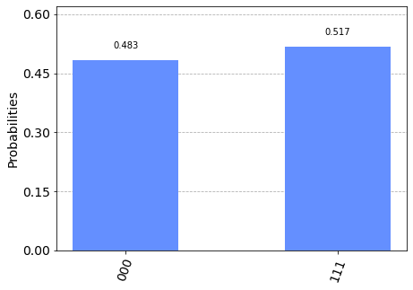
IBMQ.load_account()
prov = IBMQ.get_provider(hub='ibm-q')
device = prov.get_backend('ibmqx2')
job = execute(circuit, backend=device, shots= 1024)
print(job.job_id())
from qiskit.tools.monitor import job_monitor
job_monitor(job)
5e713e2b707aed00185756d8
Job Status: job has successfully run
result_qc = job.result()
plot_histogram(result_qc.get_counts(circuit))
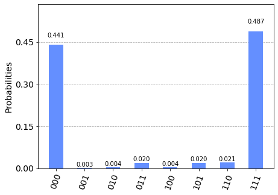
from qiskit.ignis.mitigation.measurement import (complete_meas_cal,CompleteMeasFitter)
cms_circuits , stateLabels = complete_meas_cal(qr =circuit.qregs[0], circlabel ='measerrormitigationcal')
cms_circuits[2].draw(output='mpl')
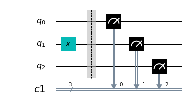
len(cms_circuits) #2 elevato n.ro qubits
#eseguo di nuovo job su Quantum computer e con mitigations complete_meas_cal
cms_job = execute(cms_circuits, backend= device, shots = 1024, optimization_level=0 )
print(cms_job.job_id())
job_monitor(cms_job)
result_cms = cms_job.result()
5e713e7e10ebe9001a2f85cf
Job Status: job has successfully run
plot_histogram(result_cms.get_counts(cms_circuits[nq]))
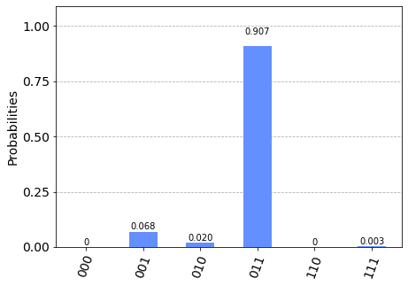
meas_fitter= CompleteMeasFitter(result_cms,stateLabels)
meas_fitter.plot_calibration()
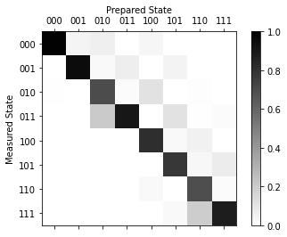
#vediamo quanto abbiamo migliorato < minore noise
meas_filter = meas_fitter.filter
mitigated_result = meas_filter.apply(result_qc)
device_counts = result_qc.get_counts(circuit)
mitigated_counts = mitigated_result.get_counts(circuit)
plot_histogram([device_counts, mitigated_counts], legend=['device, noisy','device, mitigated'])
Nel grafico possiamo osservare i diversi valori ottenuti nella prima elaborazione(noisy) e la seconda con la
mitigazione ottenuta con i filtri applicati(mitigated) e si nota che alcuni valori come 010 o 101 passano a zero mentre altri valori hanno un
risultato minore a vantaggio di 000 e 111.
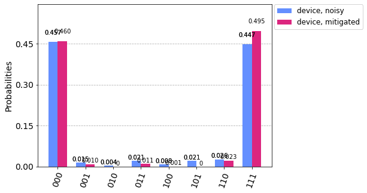
THE BERNSTEIN-VAZIRANI-ALGORITHM ON QUANTUM COMPUTING
Ora esaminiamo l'argoritmo che implemntato in un circuito quantico ci permette di individuare una parola segreta in un solo
tentativo mentre con un circuito classico sono necessari tanti tentatvi equivalenti alla lunghezza della parola.
from qiskit import *
from qiskit.tools.visualization import plot_histogram
%matplotlib inline
password = '11111100'
circuit = QuantumCircuit(len(password)+1,len(password)) #
circuit.h(range(len(password)))
circuit.x(len(password))
circuit.h(len(password))
circuit.h(len(password))
circuit.barrier()
for i, num in enumerate(reversed(password)):
if num == '1':
circuit.cx(i,len(password))
circuit.barrier()
circuit.h(range(len(password)))
circuit.barrier()
circuit.measure(range(len(password)),range(len(password)))
circuit.draw(output='mpl')
Nel grafico possiamo vedere la cotruzione del circuito che implementa l'algoritmo di Bernstein-Vazirani che ci permette
di individuare la password inserita e con il quantum computing individuarla con un unico tentativo mentre con un classico
circuito si necessita di tanti tentativi di quanti sono i bit che compongono la password nel nostro esempio sarebbero necessari 8 tentativi.
Partendo da dx a sx es. 00000000 con la funzione AND 00000001 si individua il primo bit a dx poi si fa ancora AND con 00000010 e si individua
il 2 bit a dx e così via. Mentre con l'esempio qui riprodotto abbiamo subito a primo tentativo la soluzione.
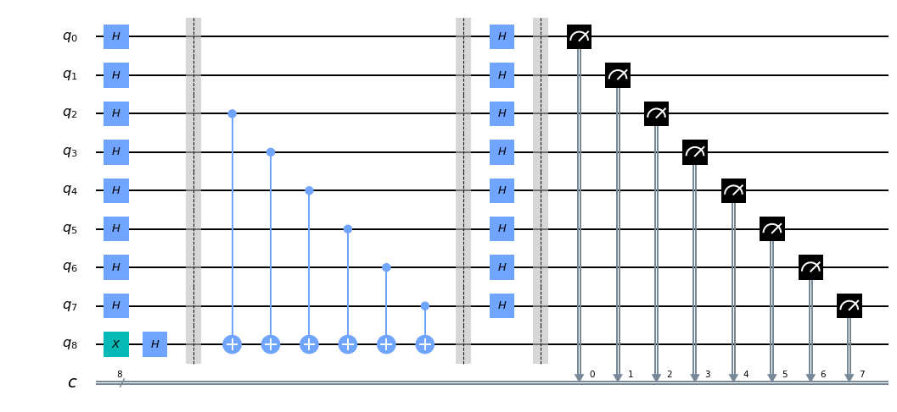
simulator = Aer.get_backend('qasm_simulator')
result = execute(circuit, backend= simulator, shots = 1).result()
counts = result.get_counts()
print(counts)
#Sotto il risultato ottenuto
#{'11111100': 1}
THE QUANTUM TELEPORTATION
Nel Quantum Computing si può effettuare il teletrasporto .... non come su STAR TREK ma si possono trasferire delle informazioni da un
qubit ad un altro qubit ma rimane il NO CLONING THEOREM cioè non si possono clonare dei qubit (no copia/incolla).
Vediamo un esempio ...
from qiskit import *
circuit = QuantumCircuit(3,3) #3 qubit circuit e 3 classical circuit
%matplotlib inline
circuit.draw(output='mpl') #disegno circuito vuoto
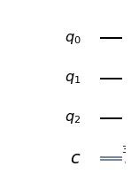
circuit.x(0)
circuit.barrier()
circuit.draw(output='mpl')
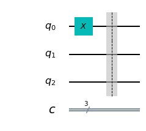
CREATE ENTANGLEMENT TRA Q1 and Q2
circuit.h(1)
circuit.cx(1,2)
circuit.draw(output='mpl')
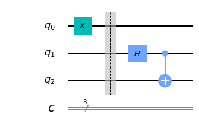
circuit.cx(0,1)
circuit.h(0)
circuit.draw(output='mpl')
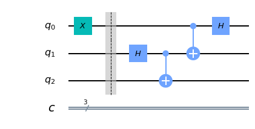
circuit.barrier()
circuit.measure([0,1], [0,1]) #misurazione qubit_reg e classical_reg
circuit.draw(output='mpl')
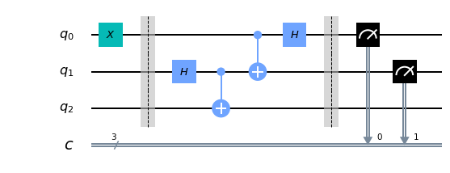
circuit.barrier()
circuit.cx(1,2)
circuit.cz(0,2)
circuit.draw(output='mpl')
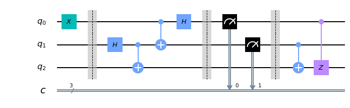
QUANTUM TELEPORTATION PROTOCOL
Trasferire informazioni da un qubit ad altro qubit
circuit.measure(2,2)
simulator = Aer.get_backend('qasm_simulator')
result = execute(circuit, backend = simulator, shots = 1024).result()
counts = result.get_counts()
from qiskit.tools.visualization import plot_histogram
plot_histogram(counts)
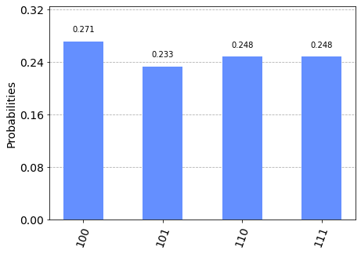
print(counts)
{'111': 254, '100': 277, '101': 239, '110': 254}
risultato 100 indica C2 = 1 C1 = 0 e C0 = 0 poi 101 indica C2 = 1 C1 = 0 C0 = 1
e così via perchè stiamo misurando c2 --> circuit.measure(2,2)